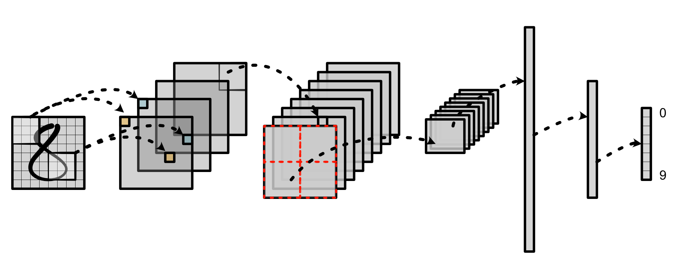

MiniTorch Info
MiniTorch 是一个面向希望了解深度学习系统内部概念的机器学习工程师的 DIY 教学库。它是 Torch API 的纯 Python 重新实现，旨在简单、易读、经过测试且增量的。最终的库可以运行 Torch 代码。

该课程的主要仓库可在 GitHub 上找到。为了完成任务，你需要填写 TODO 声明并通过包含的单元测试套件。此外，还有额外的可视化工具来追踪你的进度。
class ReLU(ScalarFunction):
@staticmethod
def forward(ctx, a):
# TODO: Implement for Task 1.2.
raise NotImplementedError('Need to implement for Task 1.2')
@staticmethod
def backward(ctx, d_output):
# TODO: Implement for Task 1.4.
raise NotImplementedError('Need to implement for Task 1.4')
原始的文档在 minitorch docs 这里可以找到